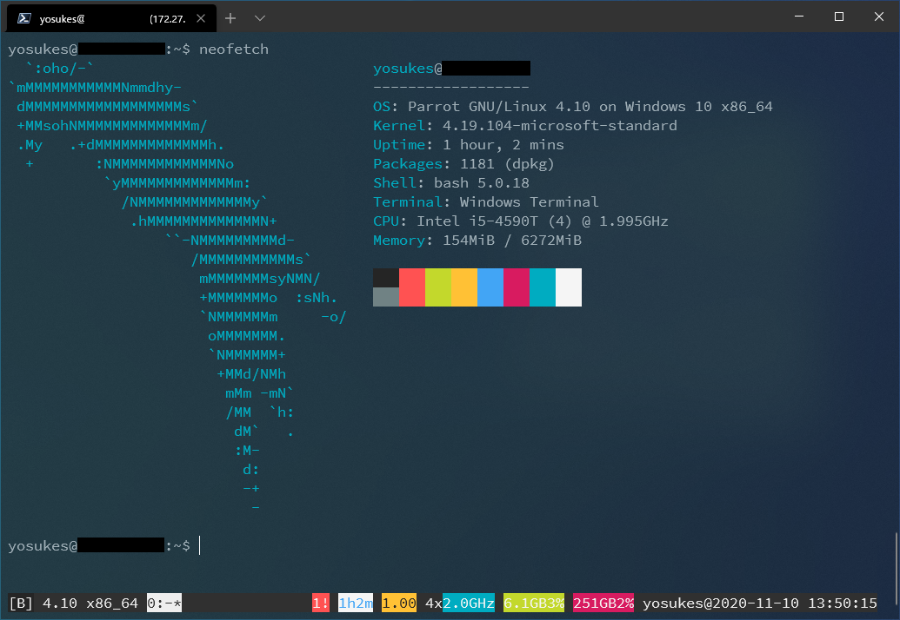
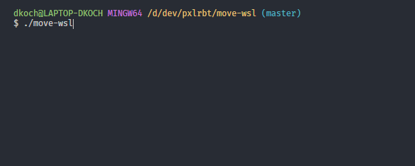

WSL (Windows Subsystem for Linux)
WSL is a feature of Windows that allows developers to run a Linux environment without the need for a separate virtual machine or dual booting.
wslu - A collection of utilities for WSL
ATTENTION!
Built-in versions of wslu in Ubuntu are no longer supported by me.
If you have problems, please check whther you are using the PPA version of wslu. If not, please report to the Ubuntu WSL team; However, the PPA version of wslu will address most issue that come from the built-in version.
This is a collection of utilities for the Windows Subsystem for Linux (WSL), such as converting Linux paths to Windows paths or creating Linux application shortcuts on the Windows Desktop.
- Requires at least Windows 10 Creators Update;
- Some of the features require a higher version of Windows;
- Supports WSL2;
- Supports Windows 11.
PPA version of wslu
Parrot Security OS on WSL (Windows 10 FCU or later)
based on wsldl

Requirements
- Windows 10 Fall Creators Update x64 or later. (Testing with build 19631)
- Windows Subsystem for Linux feature is enabled.
Install
1. Download installer zip / Here
2. Extract all files in zip file to same directory
3. Run Parrot.exe to Extract rootfs and Register to WSL
Exe filename is using to the instance name to register. If you rename it you can register with a diffrent name and have multiple installs.
How-to-Use(for Installed Instance)
exe Usage
Usage :
<no args>
- Open a new shell with your default settings.
run <command line>
- Run the given command line in that distro. Inherit current directory.
runp <command line (includes windows path)>
- Run the path translated command line in that distro.
config [setting [value]]
- `--default-user <user>`: Set the default user for this distro to <user>
- `--default-uid <uid>`: Set the default user uid for this distro to <uid>
- `--append-path <on|off>`: Switch of Append Windows PATH to $PATH
- `--mount-drive <on|off>`: Switch of Mount drives
get [setting]
- `--default-uid`: Get the default user uid in this distro
- `--append-path`: Get on/off status of Append Windows PATH to $PATH
- `--mount-drive`: Get on/off status of Mount drives
- `--lxguid`: Get WSL GUID key for this distro
backup [contents]
- `--tgz`: Output backup.tar.gz to the current directory using tar command
- `--reg`: Output settings registry file to the current directory
clean
- Uninstall the distro.
help
- Print this usage message.
How to uninstall instance
WSL notes
Rebuilding kernel with kvm support
This instructions are based on microhobby.com.br
- Clone source
- Reconfigure kernel
Enable kvm, as described here https://wiki.gentoo.org/wiki/QEMU#Kernel
- Build kernel
- Copy kernel
- Copy
.wslconfigfile to user home
Starting WSL with KVM support
- Copy
run-wsl.bat,attach.wdbgandpatch_wsl_nested.jsto same folder - Fix path in
attach.wdbg - Open admin powershell in that folder
- Run
./run-wsl.batand follow instructions
Move WSL
Bash, batch and PowerShell script to move WSL 1 and WSL 2 distros VHDX file to a different location.

Usage
Bash
Use with git bash for Windows or similiar.
Interactive way
1) ./move-wsl
2) Select your distro
3) Enter your target (i.e. /d/wsl target/ubuntu)
Explicit way
1) Get a list of WSL distros: wsl -l
2) Move your image: ./move-wsl [NAME] [LOCATION]
Example: ./move-wsl docker-desktop /d/docker
PowerShell
Interactive way of moving wsl for Windows PowerShell.
1) ./move-wsl.ps1
2) Select your distro
3) Enter your target (i.e. D:\wsl target\ubuntu)
Batch
This is a lightweight version which can also be used from Windows CMD.
1) Get a list of WSL distros: wsl -l
2) Move your image: move-wsl.bat [NAME] [LOCATION]
Example: move-wsl.bat docker-desktop "D:\wsl files\docker"
Moving Docker WSL
Before moving Docker WSL make sure to stop the Docker service. Otherwise Docker will crash and you may need to reset it to factory defaults.
Default user was switched to root when moving a distro
Set your default user inside your distro by adding the following configuration to your /etc/wsl.conf.
If the file doesn't exist create it manually. Then exit your distro, terminate it (wsl -t YOUR_DISTRO) and start it again. For further options see Microsoft Docs.
Some distributions also allow settings the default user via command line with YOUR_DISTRO config --default-user YOUR_USER (e.g. ubuntu config --default-user johndoe). Make sure to shutdown your distro before (wsl -t YOUR_DISTRO).
Standard distro switched when moving it
Since we need to unregister to import it with the same name, the standard distro can be switched. Just set your standard distro again:
WSL version was switched when moving distro
On import the distro will be registered with the current default WSL version. You can set your default WSL version with wsl --set-default-version <Version>.
When the WSL version was accidentally changed while moving, you can set the version with wsl --set-version <Distro> <Version>.
Minimal WSL2 systemd script
This is a simple script to perform a minimal installation of @diddledan's one-script-wsl2-systemd for Insiders.
This script only includes the following:
- add systemd support
- add classic snap support
The script should be running as root.
That's it.
ubuntu-wsl2-systemd-script
Script is unsupported and will no longer be maintained, but will be up here because it is used by quite some people.
Script to enable systemd support on current Ubuntu WSL2 images from the Windows store.
I am not responsible for broken installations, fights with your roommates and police ringing your door ;-).
Instructions from the snapcraft forum turned into a script. Thanks to Daniel on the Snapcraft forum!
Usage
You need git to be installed for the commands below to work. Use
Run the script and commands
git clone https://github.com/DamionGans/ubuntu-wsl2-systemd-script.git
cd ubuntu-wsl2-systemd-script/
bash ubuntu-wsl2-systemd-script.sh
# Enter your password and wait until the script has finished
Then restart the Ubuntu shell and try running systemctl
If you don't get an error and see a list of units, the script worked.Have fun using systemd on your Ubuntu WSL2 image. You may use and change and distribute this script in whatever way you'd like.
How to Install KALI LINUX [Distro WSL version]
-
INSTALL WSL 2
-
Upgrade WSL to latest vesion
- RUN POWERSHELL as administrator
- RESTART
dism.exe /online /enable-feature /featurename:VirtualMachinePlatform /all /norestart
dism.exe /online /enable-feature /featurename:Microsoft-Windows-Subsystem-Linux /all /norestart
- CHECK VERSION
- SET DEFAULT TO WSL 2
- INSTALL GUI
SET PASSWORD & USERNAME (OPTIONAL)
wsl --shutdown
wsl --setdefault Kali-linux
wsl -d kali-linux -u username
kali config --default-user username
sudo apt update && sudo apt upgrade -y
sudo apt install kali-desktop-xfce -y
sudo apt install -y kali-linux-large
sudo apt-get install kali-linux-default
wget https://gitlab.com/kalilinux/build-scripts/kali-wsl-chroot/-/raw/master/xfce4.sh
chmod+x xfce4.sh
sudo./x fce4.sh
- XRDP
Optional Installation
docker pull kalilinux/kali-rolling
docker run --tty --interactive kalilinux/kali-rolling /bin/bash
sudo apt update && sudo apt -y install kali-linux-headless
git clone https://github.com/RoliSoft/WSL-Distribution-Switcher.git
cd WSL-Distribution-Switcher
python get-prebuilt.pykalilinux/kali-linux-docker
python install.pyrootfs_kalilinux_kali-linux-docker_latest.tar.gz
lxrun/set default user root
https://github.com/belherdigital/documentation-oe.git
Optional Configuration
- /etc/ssl/openssl.cnf
- /etc/ssl/kali.cnf
- /etc/samba/smb.conf
- /etc/ssh/ssh_config.d/kali-wide-compat.conf
- regenerate-ssh-host-keys
- /etc/ssh
Optional Addition
/etc/apt/sources.list
grep -v '#' /etc/apt/sources.list | sort -u
echo "deb http://http.kali.org/kali kali-rolling main contrib non-free" | sudo tee /etc/apt/sources.list
echo "deb http://http.kali.org/kali kali-last-snapshot main contrib non-free" | sudo tee /etc/apt/sources.list
echo "deb http://http.kali.org/kali kali-experimental main contrib non-free" | sudo tee /etc/apt/sources.list.d/kali-experimental.list
echo "deb http://http.kali.org/kali kali-bleeding-edge main contrib non-free" | sudo tee /etc/apt/sources.list.d/kali-bleeding-edge.list
Remove Optional addition
sudo rm /etc/apt/sources.list.d/kali-experimental.list
sudo rm /etc/apt/sources.list.d/kali-bleeding-edge.list
echo "deb-src http://http.kali.org/kali kali-rolling main contrib non-free" | sudo tee -a /etc/apt/sources.list
cat /etc/apt/sources.list
sudo tee /etc/apt/sources.list.d/kali-bleeding-edge.list
sudo rm -f /etc/apt/sources.list.d/kali-bleeding-edge.list
sudo apt install gitleaks/kali-bleeding-edge
sudo apt install gitleaks/kali-rolling
echo "deb http://http.kali.org/kali kali-rolling main non-free contrib" | sudo tee /etc/apt/sources.list
sudo apt update && sudo apt -y full-upgrade
cp -i /etc/skel/.bashrc ~/
cp -i /etc/skel/.zshrc ~/
chsh -s /bin/zsh
[ -f /var/run/reboot-required ] && sudo reboot -f
grep VERSION /etc/os-release
wget http://http.kali.org/kali/pool/main/k/kali-archive-keyring/kali-archive-keyring_2022.1_all.deb
sudo dpkg -i kali-archive-keyring_2022.1_all.deb
rm kali-archive-keyring_2022.1_all.deb
sudo apt-get update
`sudo apt -f update`
`sudo apt install -y kali-linux-headless`
System
kali-linux-core: Base Kali Linux System – core items that are always included
kali-linux-headless: Default install that doesn’t require GUI
kali-linux-default: “Default” desktop (amd64/i386) images include these tools
kali-linux-arm: All tools suitable for ARM devices
kali-linux-nethunter: Tools used as part of Kali NetHunter
Tools
kali-tools-gpu: Tools which benefit from having access to GPU hardware
kali-tools-hardware: Hardware hacking tools
kali-tools-crypto-stego: Tools based around Cryptography & Steganography
kali-tools-fuzzing: For fuzzing protocols
kali-tools-802-11: 802.11 (Commonly known as “Wi-Fi”)
kali-tools-bluetooth: For targeting Bluetooth devices
kali-tools-rfid: Radio-Frequency IDentification tools
kali-tools-sdr: Software-Defined Radio tools
kali-tools-voip: Voice over IP tools
kali-tools-windows-resources: Any resources which can be executed on a Windows hosts
kali-linux-labs: Environments for learning and practising on
Menu
kali-tools-information-gathering: Used for Open Source Intelligence (OSINT) & information gathering
kali-tools-vulnerability: Vulnerability assessments tools
kali-tools-web: Designed doing web applications attacks
kali-tools-database: Based around any database attacks
kali-tools-passwords: Helpful for password cracking attacks – Online & offline
kali-tools-wireless: All tools based around Wireless protocols – 802.11, Bluetooth, RFID & SDR
kali-tools-reverse-engineering: For reverse engineering binaries
kali-tools-exploitation: Commonly used for doing exploitation
kali-tools-social-engineering: Aimed for doing social engineering techniques
kali-tools-sniffing-spoofing: Any tools meant for sniffing & spoofing
kali-tools-post-exploitation: Techniques for post exploitation stage
kali-tools-forensics: Forensic tools – Live & Offline
kali-tools-reporting: Reporting tools
Others
kali-linux-large: Our previous default tools for amd64/i386 images
kali-linux-everything: Every metapackage and tool listed here
kali-desktop-live: Used during a live session when booted from the image
Desktop environments/Window managers
kali-desktop-core: Any key tools required for a GUI image
kali-desktop-e17: Enlightenment (WM)
kali-desktop-gnome: GNOME (DE)
kali-desktop-i3: i3 (WM)
kali-desktop-kde: KDE (DE)
kali-desktop-lxde: LXDE (WM)
kali-desktop-mate: MATE (DE)
kali-desktop-xfce: Xfce (WM)
Installing Parrot distribution in WSL2
Based on script by the4rchangel.
To install the distribution you need a base. This may be Kali Linux or Ubuntu. To install, use the following instructions:
- Install the Kali Linux or Ubuntu distribution from the Microsoft Store.
- Update available repositories, install the update and the gnupg, git utility. You can do this with the command:
- Clone this repository and run the script with the command:
git clone https://github.com/Prodject/ParrotWSL.git
cd ParrotWSL
chmod a+x parrot-wsl.sh ./parrot-wsl.sh
-
During installation, you must select the distribution version (home, security, etc.)
-
Add a folder with ParrotOS to Windows Defender exceptions (Kali Linux). You can open the folder with Parrot OS using the command "explorer.exe ."
-
You can install the full version of the system with the command:
- All done)

Note: if you run the parrot-wsl-mirror.sh file, then during the installation process you can select a mirror for your location.
Environment
By default, mate environment is set, but if you are using X410 in Windowed Apps mode, you will not be able to use this mode. In this case, it is recommended to install XFCE, you can install from script additions wsl.post.sh
Parrot-on-Docker
ParrotOS on WSL2
Here's the thing... I went scouring the Internet to find some way to put ParrotOS on WSL2 and I found a couple of scripts, another couple of guides; but the apt sources were old, the tools were deprecated, and there were just a lot of tweaks/further debugging that needed to be done in order to get the thing right speed. Plus, you had to start with an Ubuntu/Debian/Kali distro anyway which to me didn't seem like the right answer.
As much as I would like to take credit for this super straight-forward simple way of installing... really any distro your little heart desires {yea you, I'm talking about your little heart buddy}, I just ganked this from the Microsoft documentation found here. So I shant toot my own horn. I don't know why it took me so damn long to read the documentation but I figured I'm not the only one, so here we are.
What's that? Shut the Fv*k up and get on with it? Right Right Right... my bad.
Prerequisites
- There are a million and one guides out there on how to install WSL2. Like this one, that one, or this other(for those of you who like the motion picture formats). So if you don't have that done, it's kinda necessary.
- Next
- You need to Head over to the Website of Docker and follow thier guide on setting up Docker Desktop with WSL2 backend. There are obvious workarounds for this which... I suppose may be worth getting into later but for now, if you can, do the do and install the thing.
- Meat & Potatoes
Get yourself a hot-n-ready tar'd ParrotOS
Now I imagine that there are a ton of ways to go about this. ~~Heck, I even did you a solid and got one here for ya.~~ But for the sake of learnin you one, we'll go through the steps anyway.
So the easiest way ~~(besides getting yours here)~~ to get a ParrotOS tar file of the entire image is to compress a container. I highly encourage you to head over to the ParrotSec website to view their latest Downloads. Here is their official Docker documentation where you will find 2 containers. Again - I highly recommend that you go check it out.
-
Open your WSL2 CLI (bash or whatevs) in a distro you've already got installed.
-
In WSL you are going to start Docker
Core Template:
Parrot.run/Core
Core system with just the Parrot basics. You can use it as a start point to create your custom containers. This image is multiarch, and works for amd64, arm64 and armhf architectures.
Launch the container
Security Template
Parrot.run/sec
This container includes a huge collection of tools that can be used via command line from inside a docker container. Some tools with graphical interface were excluded for obvious reasons. This container ships with the following metapackages: -parrot-cloud
Launch the container
- Get the image's container ID and save it as a variable
All that so you can import the tar file as an image into WSL2
Import ParrotOS tar file into WSL
-
Open yourself a powershell instance and get to your
directory and make a folder to install your Distro. -
move into your new directory Import your tar file into WSL2. Syntax is important here '''wsl --import
- Check installed distros
- Launch that nizbich
Extras in this Repository
Check out the Docs folder. There are a few things in there which help out post import. Some dot files, and wsl config files. If they help, cool, if not.. no sweat.
WSL Pentesting
Interesting Files
Escape WSL to Windows Host Machine
If we’are currently on WSL machine, we can access to the host Windows machine as below.
If /mnt/c/ is empty, we need to mount the folder by running the following command.
cd /
# -t: Limit the set of filesystem types
# drvfs: A plugin for WSL
# C: : Specify the Windows root
mount -t drvfs C: /mnt/c